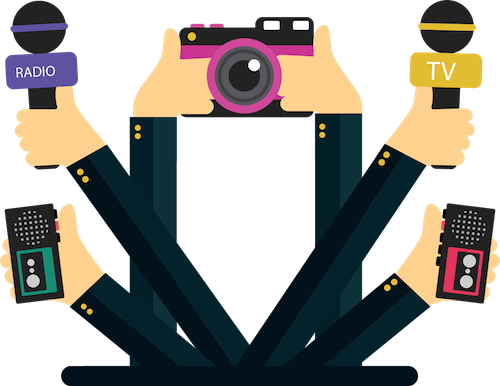

Periodismo
Actividad cuyo fin es recolectar, sintetizar, jerarquizar y publicar información relativa a hechos del presente, del pasado y/o del futuro. En este sentido, el periodismo se entiende como una metodología adecuada para poder presentar cualquier tipo de información valiosa, buscar fuentes seguras y verificables.
